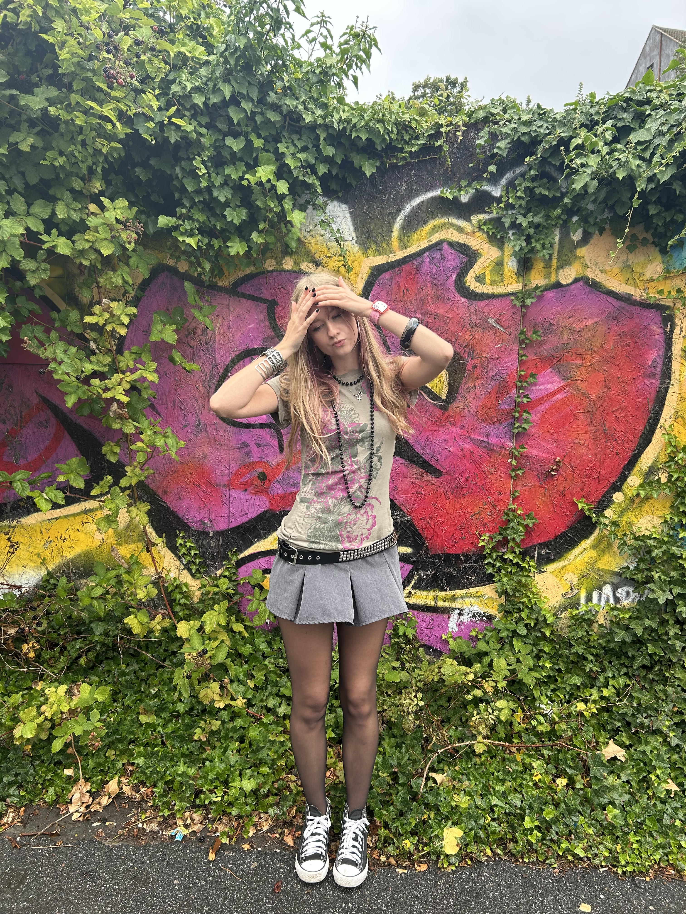
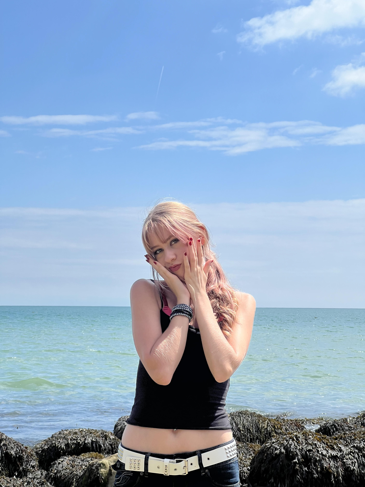
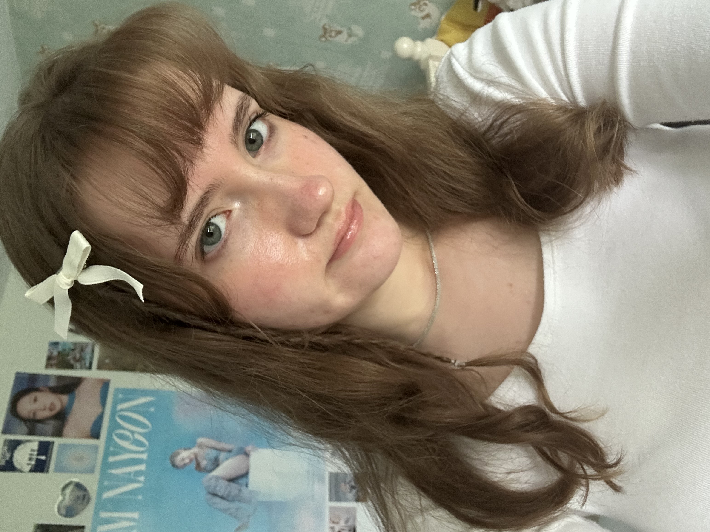
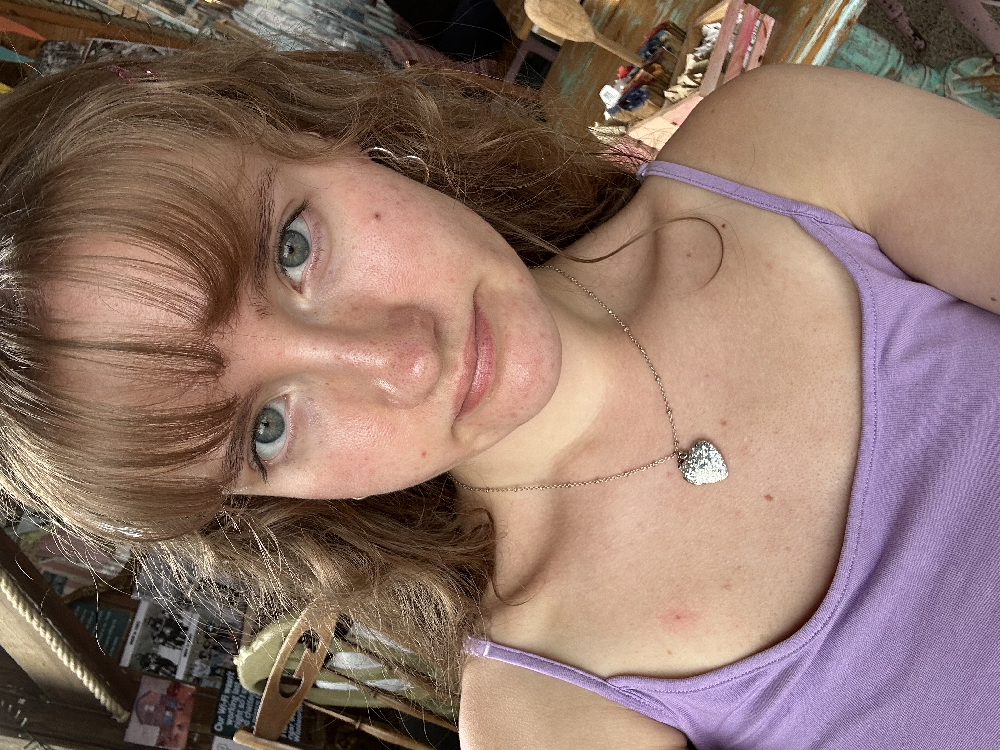

The Women In STEM Paper (WISP) is a newsletter written by girls in STEM for girls in STEM.

Hi! My name is Ellie and I founded WISP, because of my passion for helping more young women into STEM fields. My main subject areas are maths and physics, I specialise in calculus as well as theoretical physics and cosmology. I love fashion almost as much as I love physics and I hope to help others see physics with the same beauty I do.

hi, i'm esther and i am pursuing a career in medicine. my articles are on innovations in medical research, so i hope that they are of use to others aiming to enter the field.